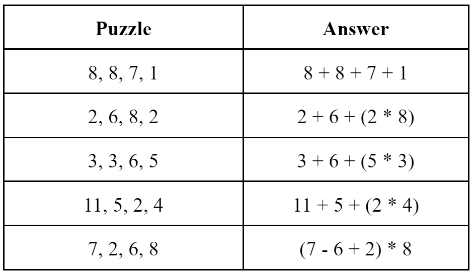
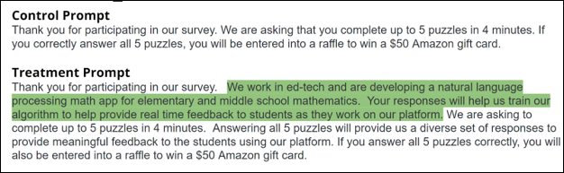
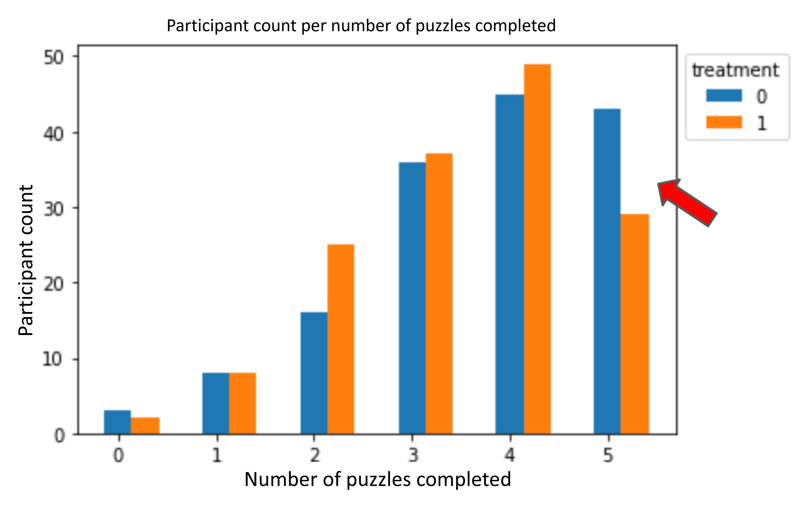

EXPERIMENT: MOTIVATING ALTRuiSTIC BEHAVIOR
This is a group project I worked on for the Master of Information and Data Science (MIDS) - Experiments and Causal Inference course at UC Berkeley.
Teammates: Sumedh Shah, Ryan Wilson.
Links: [Slide Deck], [Final Report]
Skills Demonstrated
- Conceptualization of a field experiment to induce specific human behavior.
- Executing research studies, including recruitment and data collection.
- Proficiency in statistical analyses and regression modeling using R.
- Thorough examination of data to uncover meaningful insights.
- Critical thinking in interpreting results, analyzing limitations and devising future enhancements.
Technologies: R, Qualtrics, Prolific
Overwiew
This project centers on an experimental exploration of the influence of altruistic intent on human behavior. The primary objective was to explore the impact of outlining benefits for others during a puzzle-solving task on participant performance, in contrast to completing the task for a financial reward. Participants were recruited from the Prolific platform and an online puzzle-solving task was administered through Qualtrics. We thoroughly examined the generated data and performed regression analyses using R to assess the impact of the treatment on participant responses. Additionally, we critically analyze limitations and propose avenues for future enhancements.
Approach
- Motivation: Altruism is an extremely fascinating and uniquely human behavior. Our aim was to explore how human behavior responds when altruistic benefits associated with a task are explicitly communicated. This experiment delves into whether participants' performance on a puzzle-solving task is influenced by the articulation of benefits to others, in contrast to those solely motivated by a financial reward.
- Task: Participants were tasked with solving five "Factor 24" puzzles of increasing complexity within a 4-minute timeframe. Each puzzle presented four 1-digit numbers, and participants were required to employ addition, subtraction, multiplication, and/or division operations to achieve a sum of 24. A financial reward served as an incentive for participants to accurately complete all puzzles within the allotted time. 
- Treatment: The treatment involved modifying the initial survey instructions. In the treatment group, the instructions included a statement highlighting the survey's benefits for elementary and middle school students. Conversely, the control group received instructions without this statement. 
- Results: In the control group, participants, motivated solely by the financial reward, were more inclined to attempt all five puzzles (p-value of .099). Conversely, those in the treatment group, driven by altruistic intentions to assist students, were less likely to complete all five questions for monetary gain. They invested more time in each puzzle, striving for accurate solutions to benefit the students. However, we did not observe any difference in the accuracy of solving the puzzles between the groups. 
- Future Enhancements:
- Exploring Alternative Outcome Metrics: We initially focused on the number of puzzles attempted and accuracy as outcome variables. However, given that altruism is associated with positive emotional feelings, incorporating a self-reported participant enjoyment rating for the puzzle-solving task may provide valuable insights into group differences.
- Revamping Incentive Structures: While our initial incentive structure included a financial reward offered as a raffle for successful puzzle completion, considering an alternative approach, with guaranteed rewards for accurately completing all puzzles, could magnify the differentiation of motivations between control and treatment groups.